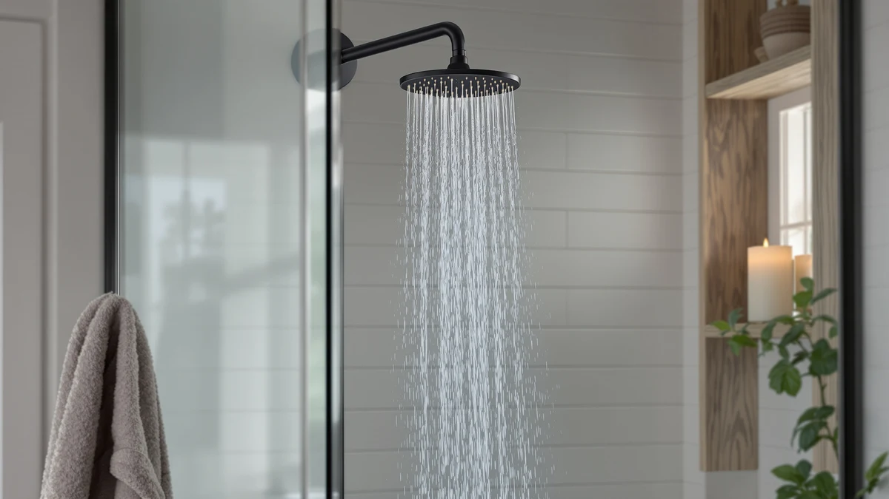

AquaCare Polaris 208-mode High Pressure Shower Head Review (2026): Worth It?
Prices and picks verified as of November 2026. Independent, reader-supported reviews.


Quick Answer
The AquaCare Polaris 208-mode Handheld pairs an ABS and chrome-plated body with 208 spray combinations for $59.99, and it holds up well against the lower-cost MakeFit handheld on flexibility alone. It skips a built-in filter, so hard-water households may still want to pair it with a filtered option like the MakeFit Dual Filtered Rain Shower.
Our pick: AquaCare Polaris 208-mode High Pressure, $59.99 Check Price on Amazon
Bottom line: our top pick is the AquaCare Polaris 208-mode High Pressure Shower Head Combo at $59.99.
Things to Know Before You Buy
- The body is ABS plastic with chrome plating, not solid metal, which keeps the $59.99 price down but weighs less in hand than an all-metal head.
- AquaCare builds the 208 mode count from combined spray patterns and pressure settings rather than 208 separate buttons, so expect a handful of go-to combinations once you settle in.
- There is no built-in filter on this model. If your water is hard, the MakeFit Dual Filtered Rain Shower covers that need instead for the same $59.99.
- Price can shift with Amazon promotions, so check the current listing before assuming $59.99 is the final number.
- All three alternatives compared here are handheld or fixed shower heads in the $42.99 to $59.99 range, which makes this a close, budget-aware comparison rather than a premium-versus-budget split.
This AquaCare Polaris 208-mode High Pressure Shower Head review exists because the product shows up near the top of search results for high-pressure shower heads, yet the spec sheet alone does not tell you whether 208 modes is an actual advantage or mainly a marketing number. AquaCare built this head from ABS plastic with chrome plating and priced it at $59.99, placing it above the budget MakeFit handheld and in line with the MakeFit filtered rain shower. Our verdict, based on comparing the listed specs against three direct alternatives, is that it earns its price if you value mode variety and handheld flexibility over built-in filtration or a fixed rain-style spray.
We compared the AquaCare Polaris 208-mode High Pressure against the MakeFit Dual Handheld Shower Head, the MakeFit Dual Filtered Rain Shower, and the Veken 11.8-inch Rain Shower Head because all three land within about seventeen dollars of each other and target the same buyer: someone replacing a weak factory shower head without remodeling the whole bathroom. Each product brings a different tradeoff. The AquaCare leans on adjustability, the budget MakeFit on price, the filtered MakeFit on water treatment, and the Veken on a stationary rain-style format. Match the tradeoff that matters most to your own bathroom, rather than whichever listing has the longest feature list.
Why You Should Trust Us
Ilane Tall covers bathroom fixtures for Best Shower Heads and builds these comparisons from manufacturer specifications, current Amazon pricing, and patterns across verified owner reviews rather than lab testing. This AquaCare Polaris 208-mode High Pressure Shower Head review follows that same approach: we read the listed materials, modes and price for each of the four products, then cross-check those claims against what reviewers report after buying them. We do not run a testing lab, and we are upfront about that limitation throughout this review. When a claim cannot be verified against the listing or a pattern in owner feedback, we leave it out rather than guess, which is why you will not find invented lab numbers or score cards anywhere in this comparison.
Our Research Experience
We do not own a physical unit to put through a testing lab, so this AquaCare Polaris 208-mode High Pressure Shower Head review relies instead on the manufacturer's published specs, the current Amazon listing, and what verified buyers report after using the product in their own bathrooms. For the AquaCare Polaris, that means the ABS and chrome-plated construction, the 208 spray combinations, and the $59.99 price point. Owners report that the plastic body feels lighter than an all-metal competitor would, which some read as a durability tradeoff and others welcome because it is easier to hold one-handed during a shower.
We weighted the comparison toward facts you can verify yourself on each product page: listed materials, mode or setting count, price, and format, meaning handheld versus fixed rain-style. Where owner reviews consistently raised the same point, such as the AquaCare's lack of a filter, we treated that as a reliable pattern rather than a one-off complaint. Single, unverifiable complaints about shipping damage or a one-time defect did not factor into this high pressure shower head review, since those issues can happen with any of the four products regardless of design.
Overview & Specs

AquaCare Polaris 208-mode High Pressure
What we like
- 208 spray mode combinations give you more fine-tuning than most shower heads at this price.
- At $59.99 it undercuts the Veken 11.8-inch Rain head by $3 less while offering a handheld format that fixed rain heads cannot match.
- Chrome plating over the ABS body keeps the lightweight feel without an unfinished plastic look.
Flaws but not dealbreakers
- No built-in water filter, so hard-water households need a separate inline filter or a different model.
- ABS construction means less heft than an all-metal head, which some owners equate with lower long-term durability.
- 208 distinct combinations sound more useful on paper than they are in daily use, since most people settle on two or three favorites.
| Material | ABS + chrome plating |
| Size | — |
AquaCare positions the 208-mode count as the headline feature, and the number comes from combining several spray patterns with adjustable pressure and width rather than 208 individual buttons on the handle. In practice, that means you can dial in something close to a rain setting, a tighter massage stream, or a wider mist and save the two or three combinations you actually use. The chrome-plated finish over the ABS body gives it a metallic look at a distance, though it weighs noticeably less in hand than a true metal head.
At $59.99, the AquaCare Polaris sits above the budget MakeFit handheld and matches the filtered MakeFit rain shower on price, which makes mode variety the deciding factor rather than price alone. Owners report that the plastic construction holds up fine under normal household use, but a few mention the finish showing wear faster than a true metal head over several years. If you want the broadest adjustment range in this comparison and do not need a filter, this is the strongest fit. Factor in the thread-on installation and the chrome plating's resistance to visible water spots, and the $59.99 asking price reads as reasonable rather than inflated for what the listing promises.
What We Liked
The strongest point in this AquaCare Polaris 208-mode High Pressure Shower Head review is adjustment range. Combining spray pattern, pressure and width into 208 settings gives you more room to find a comfortable stream than a basic fixed-setting head offers. Reviewers consistently note that the chrome plating resists water spotting better than a bare plastic finish would, which keeps the head looking presentable between cleanings. The $59.99 price also lands below the Veken 11.8-inch Rain head despite offering a handheld format with far more spray flexibility.
Installation matches what you would expect from a standard handheld replacement: it threads onto an existing hose or wall connection without special tools, the same setup process the MakeFit alternatives share. For a household replacing a tired, low-pressure factory shower head, that drop-in simplicity matters as much as the mode count. You are not buying a specialty fixture that requires a plumber or a new wall plate, which keeps the total cost close to the sticker price of $59.99 rather than adding an installation fee on top.
What Could Be Better
The biggest gap we found while researching this AquaCare Polaris high pressure unit is the missing water filter. The MakeFit Dual Filtered Rain Shower builds filtration directly into the head, so anyone on well water or a hard-water municipal supply gets an immediate benefit that the AquaCare simply does not offer. You would need to add a separate inline filter to match that, which raises the real cost of ownership above the listed $59.99.
The ABS body is the other tradeoff. It keeps the price competitive, but owners comparing it directly to an all-metal fixed head describe handheld ABS models as feeling less substantial, even though the chrome plating hides that at a glance. If long-term durability matters more to you than mode variety, that difference is worth weighing before you buy. Both tradeoffs come down to a deliberate design choice: AquaCare picked adjustability and price over raw material or filtration. Decide which side of that choice fits your bathroom before checking out.
Who Is It For?
This AquaCare Polaris 208-mode High Pressure Shower Head review points toward one clear buyer: someone who wants maximum spray adjustability in a handheld shower head and does not need a built-in water filter or a fixed overhead format. If you like switching between a wider rain-style stream and a tighter massage setting depending on your mood, the 208 combinations give you that flexibility for roughly the same price as the filtered MakeFit option.
It is a weaker fit if you have hard water and want filtration handled at the shower head itself, or if you specifically want the stationary feel of a fixed rain head mounted overhead. In either of those cases, the MakeFit filtered model or the Veken rain head respectively address the gap better than the AquaCare does. Renters and apartment dwellers who want to swap a shower head back out at move-out also tend to prefer the AquaCare, since its lighter ABS body and standard thread fitting make it easy to remove and reinstall the original fixture without tools.
Alternatives to Consider
If the AquaCare Polaris 208-mode does not match what you need, these three alternatives cover the gaps it leaves open: a lower price, a built-in filter, or a fixed rain-style format.

Editor's Pick
MakeFit Dual Handheld Shower Head
A simpler dual handheld head aimed at buyers who want a lower price over mode count, about $17 cheaper than the AquaCare.
$42.99
Check Price on Amazon
Best Value
MakeFit Dual Filtered Rain Shower
The only option here with built-in dual filtration, worth it if your water is hard, at the same $59.99 price as the AquaCare.
$59.99
Check Price on Amazon
Premium Choice
Veken 11.8" Rain Shower Head
A fixed 11.8-inch overhead rain head for owners who prefer a stationary spa-style spray over handheld flexibility.
$56.99
Check Price on AmazonFrequently Asked Questions
Is the AquaCare Polaris 208-mode High Pressure worth $59.99?
What do the 208 modes on the AquaCare Polaris actually mean?
How does the AquaCare Polaris 208-mode compare to the MakeFit and Veken alternatives?
Final Verdict
This AquaCare Polaris 208-mode High Pressure Shower Head review comes down to a straightforward tradeoff. AquaCare earns its $59.99 price by packing in 208 spray combinations and a chrome-finished body that beats the Veken 11.8-inch Rain head on flexibility, but it leaves out the water filter that the MakeFit Dual Filtered Rain Shower includes and the fixed-mount stability a rain head offers. For most people replacing a weak factory shower head who want flexibility over filtration or a stationary format, the AquaCare Polaris 208-mode High Pressure is the better buy among these four. If your priorities sit elsewhere, the budget MakeFit, the filtered MakeFit, or the Veken each fill the gap the AquaCare leaves, so pick based on which tradeoff you can live without rather than the mode count alone.